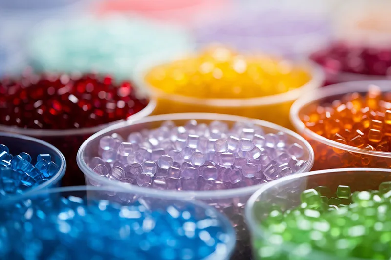

Causes of Hydraulic System Leaks in Injection Molding Machines and How to Fix Them

Overview
Leakage is one of the most common malfunctions in injection molding machines. It is caused primarily by pressure differences and clearances between hydraulic system components and pipework as fluid moves through them. In addition, unfavorable operating conditions have a negative effect on sealing elements. A hydraulic system leak prevents working pressure from being established; external oil loss pollutes the environment, disrupts the production process, and can lead to serious consequences. Below we briefly review the causes of leaks and the measures used to address them.
Classification of Leaks
Two main types of leaks are distinguished in an injection molding machine's hydraulic system: leaks at static seals (joints near the cylinder base and various pipe fittings) and leaks at dynamic seals (cylinder rods, hydraulic valve spools, and similar components). By form, oil loss is classified as external leakage — oil escaping the system into the environment — and internal leakage — oil flowing within the system from high pressure to low pressure due to pressure differentials and seal failure.
Causes of Leaks
Design Factors
The reliability of a hydraulic system is largely determined by the design of its sealing assemblies and the correct selection of sealing elements. An unsuitable choice of seal assembly type, seals that don't meet applicable standards, and insufficient consideration of the compatibility between hydraulic oil and seal material, operating loads, pressure limits, speeds, and the operating temperature range — all of these directly or indirectly lead to leaks of varying severity. In addition, because dust and contaminants are present in the working environment, dust-protection seals must be used to prevent dust and foreign particles from entering the system and damaging the seals. Insufficient attention during design to the geometric accuracy and surface roughness of working surfaces, as well as a lack of joint-strength calculations, can also cause leaks during machine operation.
Manufacturing and Assembly Factors
All hydraulic components and sealing elements are subject to strict requirements for dimensional tolerances, surface finish quality, roughness, and positional tolerances. If these tolerances are not met during manufacturing — for example, if the piston-to-cylinder mating radius, the depth or width of the sealing groove, or the seal bore exceed tolerance, or if machining defects cause out-of-roundness, burrs, dents, or chrome-plating flaking — the seal becomes deformed, scratched, crushed, or over-compressed and loses its sealing capability. This creates inherent leak points that may appear immediately after assembly or later during operation. Rough physical force must never be used when assembling hydraulic units. Excessive impacts — particularly striking the cylinder body or sealing flanges with a copper hammer — cause part deformation. All mating parts must be carefully inspected before assembly. Parts should be lightly coated with hydraulic oil and pressed in smoothly. Diesel fuel should be used to clean parts, especially rubber components such as sealing collars, dust rings and O-rings. Using gasoline instead accelerates rubber aging, causing it to lose elasticity and its sealing function.
Oil Contamination and Component Damage
At normal pressure, roughly 10% air is dissolved in hydraulic oil. At operating pressure, an even greater amount of air and gas dissolves into the oil, forming bubbles. If system pressure rapidly alternates between high and low during operation, bubbles form on the high-pressure side under high temperature and collapse on the low-pressure side. In addition, once cavitation pits and damage appear on the surfaces of hydraulic components, oil strikes these surfaces at high velocity, accelerating wear and causing leaks. Hydraulic cylinders, the main actuating components of the hydraulic system in many injection molding machines, are exposed to the external environment through the piston rod during operation.